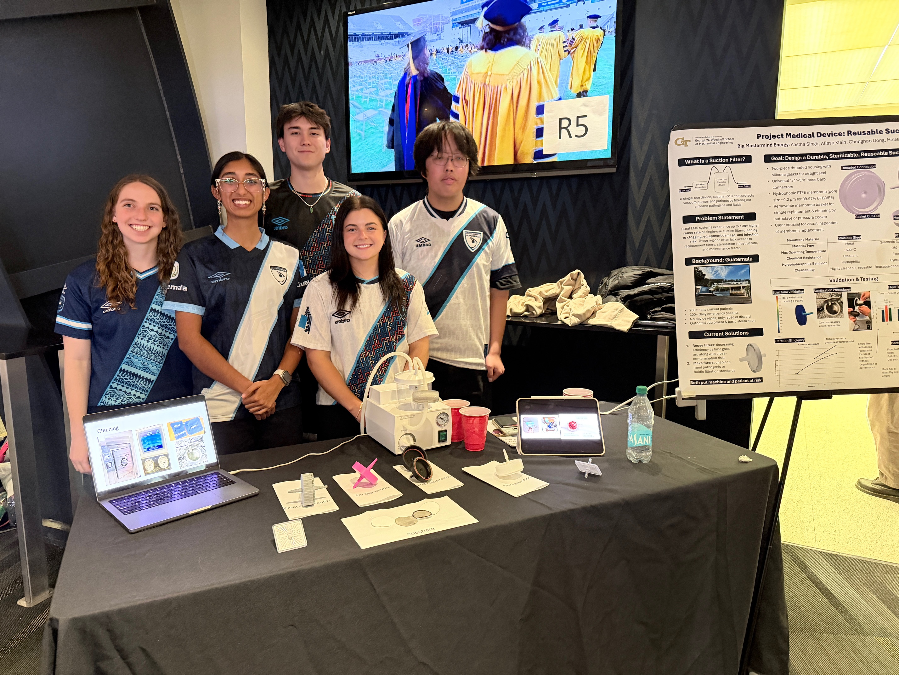
Led mechanical design and validation of a frugal, reusable in-line suction filter for operating rooms in resource-limited clinical settings, improving suction safety and reliability by 50%. Single-use filters are routinely reused in low-resource hospitals due to cost — our device provides a safe, sterilizable alternative where no cost-effective reusable solution previously existed.
We conducted material and mesh analysis, porosimeter testing, and Bacterial Filtration Efficiency (BFE) validation confirming performance across 30 sterilization cycles. I performed structural and fluid-structure simulations and maintained ISO 13485 design control documentation throughout.
CAD model of the reusable in-line suction filter assembly.
Real-time suction performance test of the prototype filter.

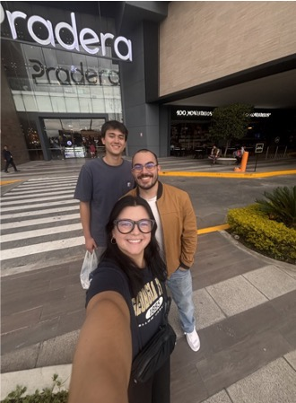
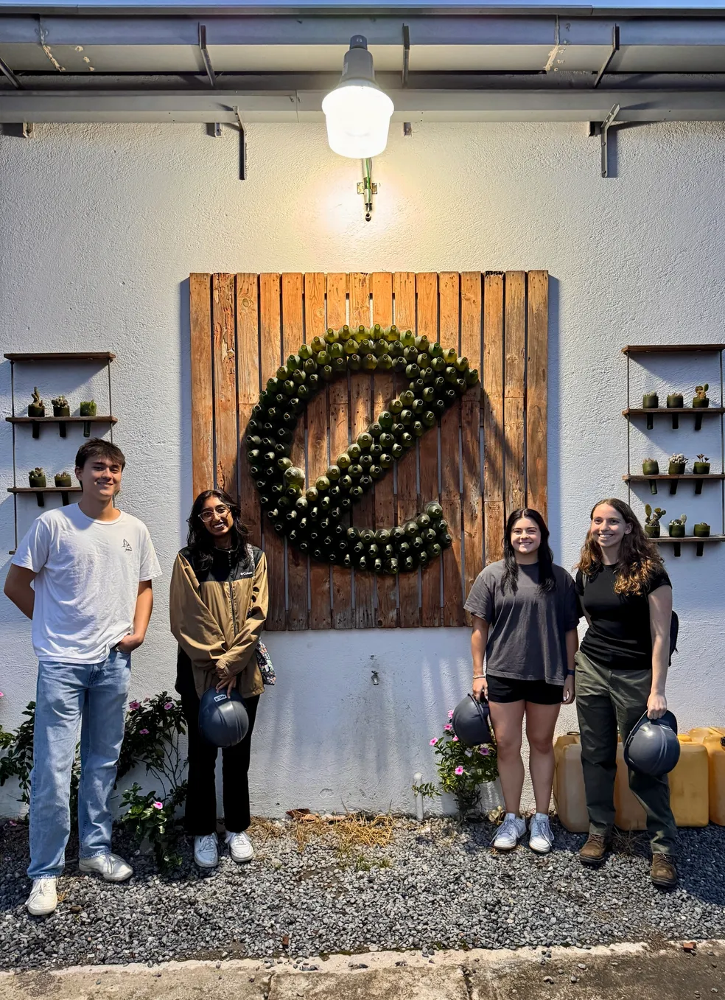
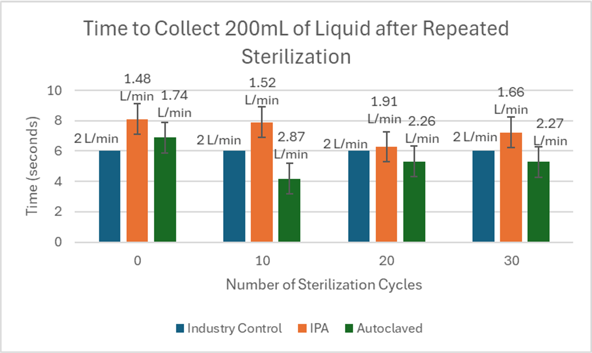
Key Outcomes
- 50% improvement in suction safety and reliability
- Validated across 30 sterilization cycles (IPA & autoclave)
- Funded by GT ME Department and Project Impact
- Collaborated with BME Engineers Without Borders & Ecofiltro (Guatemala)
- ISO 13485 design control documentation
Featured Coverage
Designed and prototyped a wearable ankle band for early detection of preeclampsia — a leading cause of maternal mortality, particularly affecting Black women in Georgia. The device uses a PPG sensor for continuous blood pressure monitoring and a flex sensor to quantify ankle edema, two key early indicators of preeclampsia.
The physical prototype integrates an Arduino Nano with sensors mounted on a cloth band for comfortable at-home use. A parallel computational prototype used Python image analysis of colorimetric urinalysis assays (Congo Red Dye and Tetrabromophenol Blue) to detect proteinuria — another preeclampsia biomarker. The project emphasized high-specificity design so any positive result would be confirmed by a medical professional.
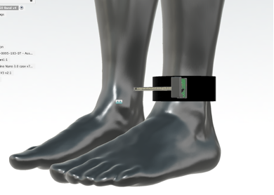
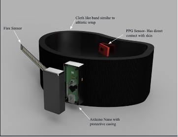
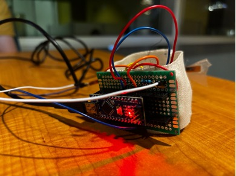
Key Outcomes
- Functional PPG-based blood pressure monitoring and flex-sensor edema detection
- Parallel computational prototype: Python image analysis of urinalysis assays
- High-specificity design for at-home use
- Addressed maternal health disparities in under-resourced Georgia communities
Designed and built a wearable lumbar sensor band to monitor lower back posture and movement. The device integrates embedded electronics into a flexible, form-fitting band worn at the lumbar region, enabling non-invasive tracking of spinal position and muscle activity throughout daily activity.
The CAD model was developed in Fusion 360, and the physical prototype was assembled and tested on a mannequin and team members. The project aimed to provide a low-cost, wearable solution for monitoring lumbar health outside of a clinical setting.
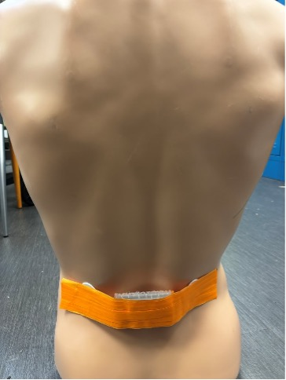
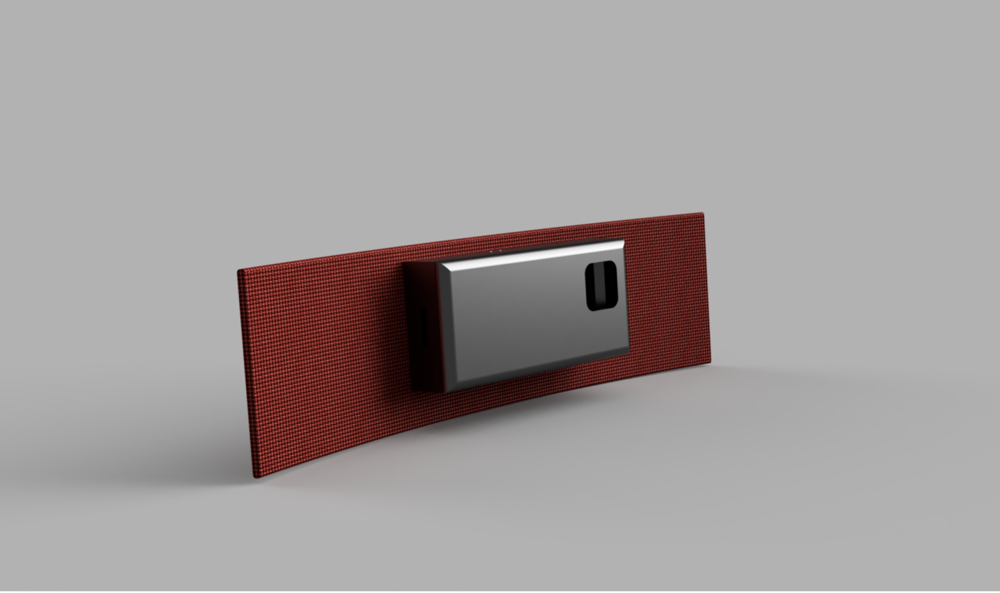
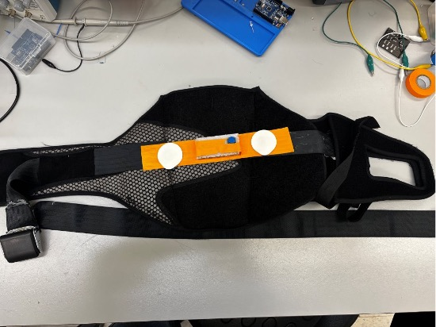
Key Outcomes
- Wearable form-factor designed for continuous at-home lumbar monitoring
- CAD modeled and iterated in Fusion 360 for fit and electronics integration
- Physical prototype assembled and tested on human subjects
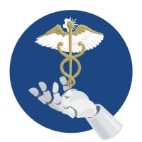
Vice President
Georgia Institute of Technology · 2023–2025
Served as Vice President of Georgia Tech's Medical Robotics Club — one of the largest student organizations in the College of Engineering with 200+ members. Organized technical workshops, career panels with industry professionals, and inter-team mentorship connecting undergraduates with graduate researchers and biomedical industry partners.
Coordinated the annual Project Showcase, where student teams presented semester-long engineering projects to faculty, alumni, and industry guests. Led executive board planning, recruitment events, and maintained partnerships with GT's BME and ME departments to provide members with research and internship opportunities.
Spent Spring 2025 at the Georgia Tech Shenzhen Institute (GTSI) as a U.S. Department of State Gilman Scholar with the Critical Need Language Award for Chinese. The semester included immersive coursework, language study, and cross-cultural research engagement across China and South Korea.
Visited Peking University (PKU) in Beijing to meet with Dr. Mengdi Han's lab, researching flexible bioelectronics and wearable biosensors — directly relevant to my interests in bio-inspired design and medical devices. Also visited Seoul National University (SNU) in South Korea to meet with Dr. Hyungmin Park's Bio-Fluid Mechanics Laboratory, exploring overlaps with my fluid dynamics research.
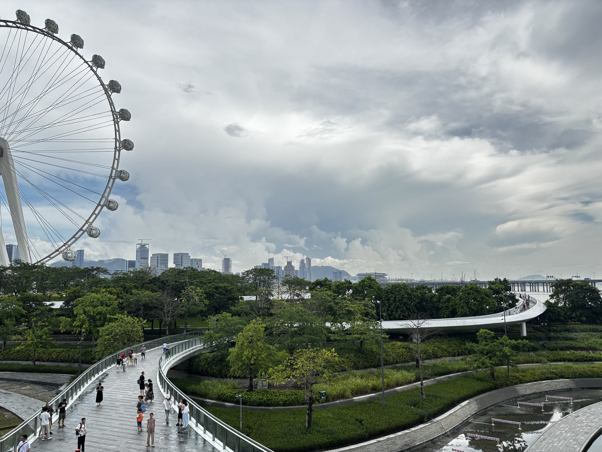
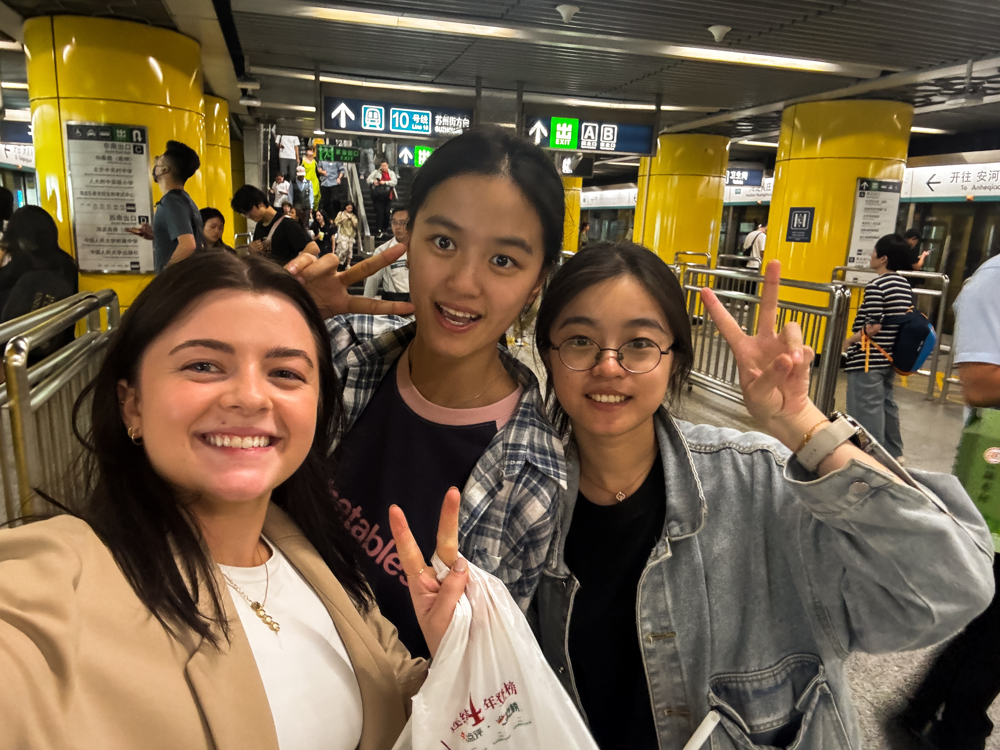
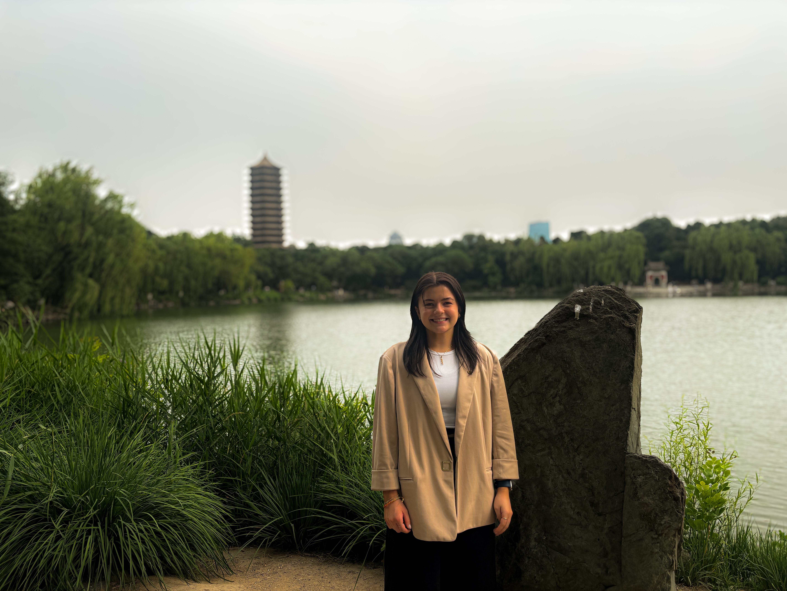
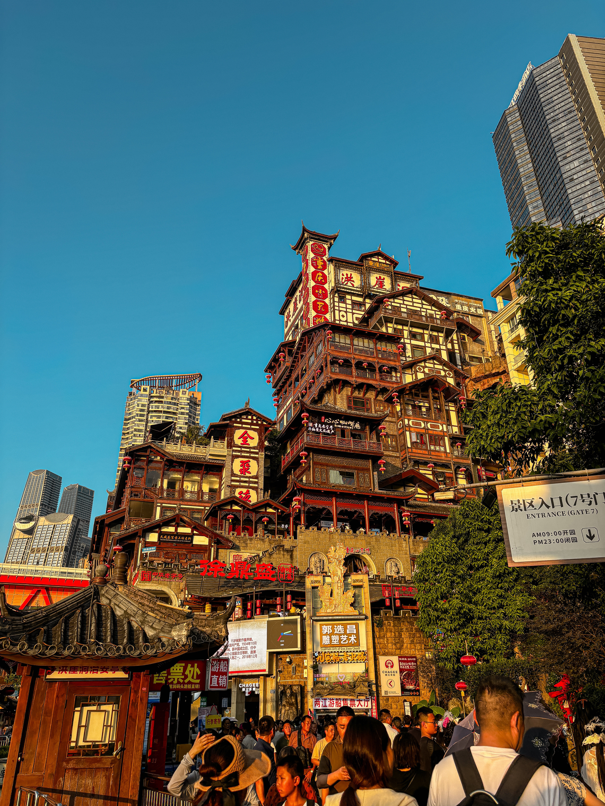
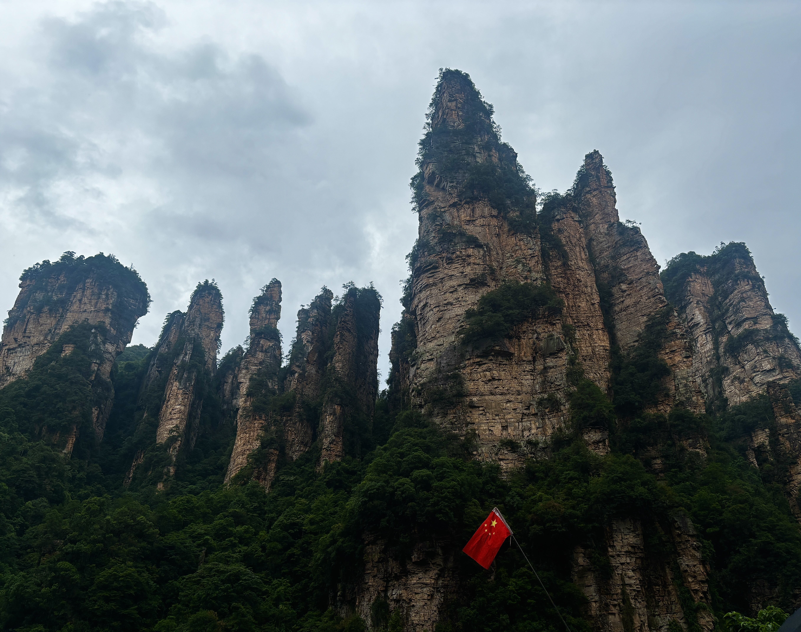
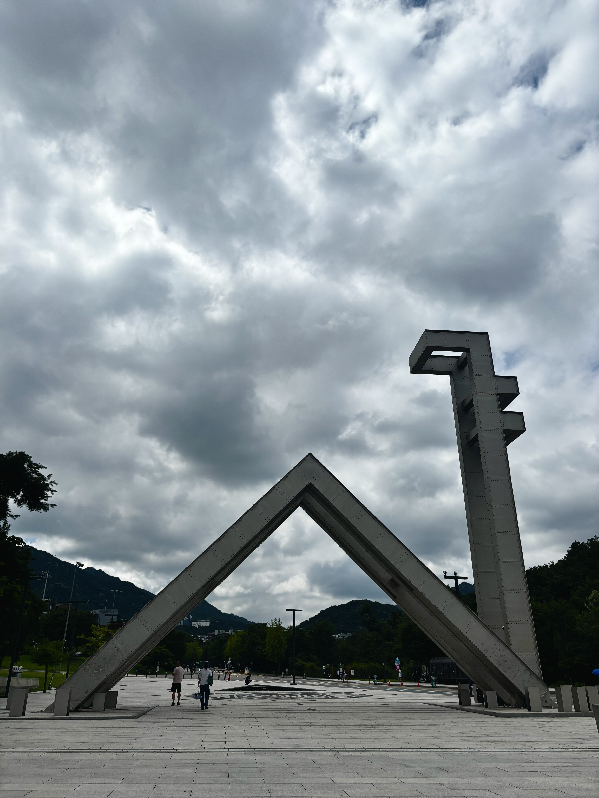
Shenzhen Bay · Beijing · Peking University · Shanghai · Chongqing · Chongqing Night · Zhangjiajie · Seoul · Seoul National University